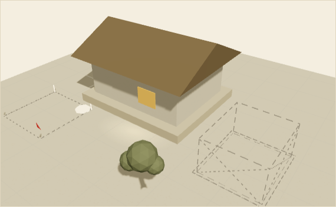
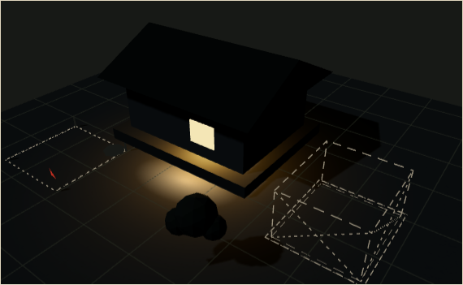

NANMU 的博客
先把最小的东西做完,上线,能用。
前身烂尾的教训,与这次最小闭环的来历。


可拖拽小幅环顾 · 看轻量线稿版
今年上半年,我做过一个功能很多的博客,十二周半之后烂尾收场。这次重开,就从那段历史里长出来——先把最小的东西做完、上线、能用。
虚构内容,仅用于排版评审——多篇文章时列表的节奏、分隔线与摘要比对。
虚构内容,仅用于排版评审。
全部文章 →
查看日报栏目(含夹具样张)→
nanmu.xyz/rss.xml
nanmu.xyz/digest.xml